TL;DR — Chris Creamer, 26, won the Robbins Cup Micro Day Trading Championship for July with a 100% return. In this live, in-person interview he breaks down his complete 4-step trading system: Environment → Location → Confirmation → Entry. He uses market structure to define regime, GEX (gamma exposure) to understand volatility, volume profile to define where to trade, and order flow with delta to time the exact entry. The result: ~60–65% win rate, 1.5–2R average, ~1.8 profit factor. More importantly, he reveals the actual reason traders fail — not strategy, but C-game sessions that destroy weeks of A-game profits.
100%
Return in July (Robbins Cup)
26
Chris's Age
60–65%
Win Rate
1.5–2R
Average Risk:Reward
~1.8
Profit Factor
90 min
Max daily trading window
20K
Min contracts/5-min candle (MNQ threshold)
1–3
Trades per day maximum
🧭 Background: From Broke to World Champion
Early journey: Quit his job, traveled, saw "40K in 15 minutes" on Instagram and started trading. Had no idea what he was doing — pure strategy-hopping and pattern matching.
The losing streak: Woke at 4–4:30 AM every day on the West Coast. Lost money. Felt embarrassed. Eventually went into debt, depleted savings, pulled money out of crypto in a bear market.
The turning point: Reached a "disgusted with myself" breaking point. Made a reckless but decisive choice: figure it out or lose everything. Key insight: stopped focusing on money, started focusing on execution.
The fix: Sized down to one micro on prop firms. Got reps. Removed money from the equation as much as possible. Money became the byproduct of proper execution.
World Championship: Won the Robbins Cup Micro Day Trading Championship for July — +100% return, beating veterans with decades of experience.
"The money is the byproduct of proper execution. It took me a long time to come to terms with that."
"I was so disgusted in myself. I never want to be that version of myself again. That's my motivation."
1️⃣ Step 1: ENVIRONMENT — Market Structure + GEX
Done before the market opens. Never during live price action.
Market Structure (Higher Time Frames: 1H / 4H)
Identify: Value Up (higher highs, higher lows), Value Down, or Sideways
Where is value being created? Where is it moving to?
What has the week been doing? What did last week do?
This defines the directional bias — do NOT trade against it without extreme confirmation
GEX — Gamma Exposure (via Tanuki Trade)
What is GEX? Dealers/market makers hedge options exposure in the underlying (futures). Their hedging behavior creates predictable volatility patterns.
Positive Gamma: Dealers sell into rips, buy into dips → Volatility Dampening → Choppy, failed breakouts. Retail who love breakouts get killed here.
Negative Gamma: Dealers buy into rips, sell into dips → Volatility Amplifier → Bigger, faster moves. More momentum continuation.
Chris uses Naive GEX (broad calculations) for NQ/QQQ/NDX — CBOE data is expensive ($300/mo for SPX only)
Key levels to identify: Call Wall (resistance), Put Wall (support), Gamma Flip Zone (positive↔negative boundary = "line in the sand")
Result: Know what type of day you're walking into before the open
Example setup: Value Up structure + Negative Gamma environment = Expect big, fast moves to the upside when structure triggers. NOT necessarily bearish — just volatile. Perfect for order flow entries with momentum.
"I will never do this while price is moving a million miles an hour. I need to build my scenarios before the market actually opens."
2️⃣ Step 2: LOCATION — Where to Do Business
Value Area Concept
The market constantly auctions to find where value is accepted — the Value Area
Discount: Anything below value area → favorable to BUY
Premium: Anything above value area → favorable to SELL
In a Value Up structure → look for longs in discount. Do NOT buy expensive. Do NOT short in premium.
Selling in premium during an uptrend = "you're going to get run over"
Low Volume Nodes (LVNs)
If price moved through an area quickly (Asia session pop, London push) = inefficient move
Low volume nodes = not much business was transacted = price will likely return
When price returns to a LVN in discount → high-probability location for reversal
Combined with Value Area Low (VAL) breakdown → entering discount = prime buy zone
⚠️ Key warning: When price breaks VAL and drops into discount, do NOT sell it there. That is exactly the most optimal area to buy. Location tells you the direction of the trade — order flow tells you the timing.
Practical Location Example (Whiteboard)
Asia session pushes higher → creates inefficient, low-volume move
At NY open, price drops → breaks VAL → enters discount
This is the Location — now wait for confirmation
Do NOT sell because "it's dropping" — you'd be selling at the bottom of a range in an uptrend
3️⃣ Step 3: CONFIRMATION — Order Flow + Delta
Now zoomed into 5-minute candles, watching two overlay types: Volume Profile per candle + Delta Profile per candle
Reading Order Flow Candles
Normal candlestick = only the scoreboard. Order flow shows how the auction developed
Volume Profile inside candle: Where is the POC (Point of Control = most contracts)? If POC is at the low → buyers were trapped, not in control
Delta Profile inside candle: Shows net aggression. Negative delta = more aggressive sellers. Positive delta = more aggressive buyers
Numbers ladder at each price level — Chris's indicator bolds any imbalance of 400%+ (aggressive side has 4× more orders than passive side)
The Absorption Pattern (The Core Entry Setup)
Phase 1: Price in discount. Sellers aggressive. Candle = large wick down, negative delta at low, POC at bottom. Sellers making effort.
Phase 2: Candle closes bullish despite seller aggression. Result = sellers got NO reward for their effort.
Phase 3: Next candle opens up, immediately pulls back. Sellers try again → but this time fail at a higher level. Failure of sellers.
Phase 4: Candle flips bullish again, positive delta builds. Shift of dominance from sellers to buyers confirmed.
→ GO LONG. Stop loss under the structure.
Bid × Ask Ladder — The Imbalance System
Right side (Ask): Passive sell orders filled by aggressive buyers
Left side (Bid): Passive buy orders filled by aggressive sellers
When bold numbers light up (400%+ imbalance) on the right side → aggressive buyers overwhelming sellers → time to go long
Chris waits for sellers to fail twice before entering. No FOMO on first signal.
"I use order flow mainly to filter trades OUT. Some days I take zero trades. The moment we start seeing order flow used to take more trades — that's the wrong direction."
"Absorption doesn't mean automatic reversal. What I need to see is dominance shifting back the other direction."
4️⃣ Step 4: ENTRY / EXIT / RISK MANAGEMENT
Entry
Trigger: Shift of dominance confirmed (sellers fail twice, buyers light up imbalance)
No chasing. No anticipating before confirmation. No FOMO. No premature entry.
Enter on the rejection/flip, not the initial signal
Stop Loss
Always below the key location/structure level that defined the setup
NOT a "small tight stop." Prefers confirmation over a better entry price.
"I don't want to look cool. I want to be right. I'll take a worse R for more correct calls."
Targets
Primary: Swing points (previous highs/lows) — "The market must take swing points or it flatlines"
Secondary: POC of the value area, Call Wall
As price approaches resistance zones → start trailing stop
Result: typically 1.5–2R per trade. Not chasing 10R home runs.
Prop firm math: $50K account with $2K drawdown, $3K profit target = 1.5R. At 65% win rate, this works cleanly. Simple. Effective. Repeatable.
"The guys who are going for 10R or 20R, posting their tiny stop screenshots — I don't care. I want to be right. I'll take the extra confirmation even if it ruins my bottom tick."
🚫 Trade Filters — When NOT to Trade
Volume Threshold: Below 20,000 contracts per 5-minute MNQ candle → don't touch it. Participation dying = lunch hour, slow grind, no edge
Time Cutoff: Hard stop after 90 minutes from NY open. Data shows trades get dramatically worse after that.
No confirmation: If in discount but sellers are NOT being absorbed + dominance NOT shifting → do not trade "because it seems cheap"
News events: If news hits right before price reaches the key level — skip
After 2 consecutive losses: Hard rule. Probability of a C-game session spikes after 2 losses in a row
Balanced market: When buyers and sellers are comfortable, no one is forced → no edge. Wait for imbalance.
⚠️ Trades on MNQ, NOT NQ. "Most people disagree with me — they say use NQ. I use MNQ. It works for me. I watch MNQ order flow. That's just what I do."
"Your biggest advantage as a trader is selective participation. Most traders don't use it. They think if you're not trading, you're doing something wrong."
🧠 Psychology: A/B/C Game Sessions
The Three Session Types (Unrelated to P&L)
A-Game: Executed exactly according to plan. No hesitation, no chase, no FOMO. Proper stops. Proper targets. Even if it loses — this is an A-game session.
B-Game: Minor deviations. Still broadly followed the process.
C-Game: Emotional decisions. Bent rules. Sized up out of frustration. Removed stops. Tilted. One C-game session can destroy a week of A-game profits.
The key insight: Consistency doesn't come from more A-game sessions. It comes from eliminating C-game sessions. You can't control how many great setups appear. You CAN control the dumb, preventable losses.
Good Loss vs. Bad Loss
Good Loss: Setup was valid, confirmation was present, execution was correct, the market just went against you. Accept it. Variance is real.
Bad Loss: You were in discount but had no seller absorption. You "anticipated" the reversal without confirmation. You guessed. Even if this wins occasionally, it reinforces the wrong behavior.
Bad losses → frustration → chasing → tilt → account gone. This is the prop firm "boom and bust" loop.
"If you keep going for 10R and you're a profitable trader, you're probably going to be losing a lot of trades — and for a beginner, that's mentally devastating. They start doing random stuff. Now the account's gone."
⚙️ Rules, Self-Awareness & Breaking Points
"Don't overtrade" is NOT a rule. Rules require a specific action attached. "Stop trading after 2 losses in a row" IS a rule. Specific. Measurable. Actionable.
Every trader has a line in the sand — the point where calculated decisions turn emotional. Find yours.
Breaking points are often invisible to the person it's happening to. You need to trace back: where in the session did it start falling apart?
It's rarely the big losing trade. Something earlier caused that. "Some sequence of events occurred."
Chris's personal rules discovered through data:
Hard cutoff: 90 minutes into NY open
Stop after 2 consecutive losses (not 3)
If he makes a premature entry or chases → shut it down immediately, no matter what
Overconfidence works both ways: Sometimes winning too much makes traders equally emotional. "They're not making calculated decisions anymore — they're making emotional ones."
"If you don't have self-control, trading's not for you. You need self-control. You can't go through life without self-control. Where you going to end up? Jail or dead. Trading is no different."
💡 Advice for Struggling Traders
Stop blaming information. Most struggling traders have an information problem in their head — but the real issue is behavior.
Brutally honest self-assessment: Some people are genuinely not suited for trading. The way they behave will never complement trading. Acknowledge that possibility.
Stop watching other people's wins. Social media creates a distorted reality. You are not the only person losing.
Size down to the point of insult. Micro so small it almost doesn't matter. Now you can focus on how you're trading rather than how much.
Learn auction market theory first. Before any strategy: understand what drives price. Buyers, sellers, auctions, value, forced participation.
Find ONE strategy that matches your personality. High-frequency scalping vs. 1-2 trades per day. Neither is wrong — but one suits you better. Don't mix them.
Don't hop strategies. If you execute one strategy properly and it fails, then you know it fails. If you're jumping around, you know nothing.
Tools to start: ATAS, Bookmap, DeepCharts — all have replay modes to get reps without real money
"Let's take a month, size all the way down. To the point where it's almost insulting. Perfect. Because now you can focus on actually executing properly."
"You do not need to be the greatest trader ever to make money with prop firms. You really don't. What you need to do is eliminate the bad losses."
🎬 50 Frames — Visual Breakdown of the Video
One frame every ~70 seconds. Purple border = contains whiteboard drawing or diagram. Covers the complete arc from intro through whiteboard strategy session to psychology discussion.
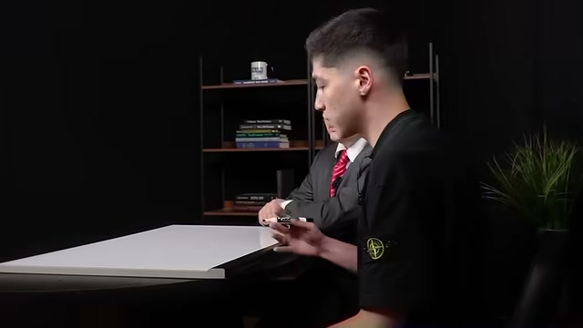
⏱ ~0:00
INTRO CINEMATIC
Dark arena with spotlight on a championship trophy
Epic cinematic intro. Sets the stakes — this is a World Championship-level achievement. The trophy metaphor signals: this is not a casual trading video, but a champion's reveal.
Robbins CupWorld Champion
⏱ ~1:10
INTRO CINEMATIC
Championship trophy on illuminated podium — cinematic continuation
Second cinematic shot. The production builds anticipation — "What strategy won this?" The answer will be revealed step-by-step on a whiteboard.
Micro Day Trading100% Return
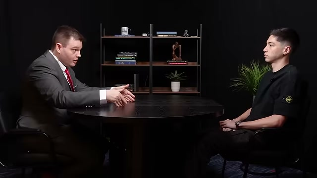
⏱ ~2:20
INTERVIEW
Chris Creamer introduced — 26 years old, Robbins Cup champion
Host introduces Chris's achievement: youngest to win, 100% in one month, beat veterans. Frames this as "never done before — world champion live on camera, step by step."
IntroductionCredentials
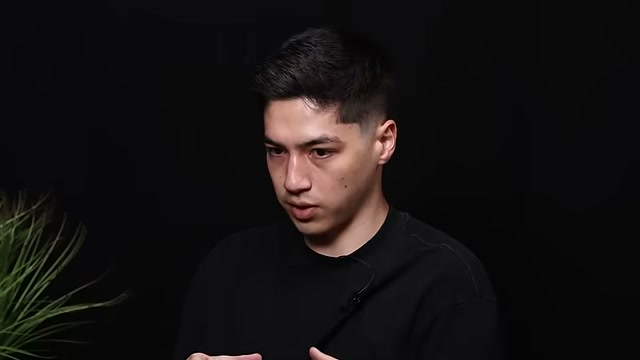
⏱ ~3:30
INTERVIEW
Chris discusses the #1 thing that clicked — moving from setup-hopping to process
Key early admission: Chris was strategy-hopping for years. The click was realizing it's NOT about the setup. It's about understanding forced participation and what other participants are doing.
Strategy HoppingForced ParticipationProcess vs Setup
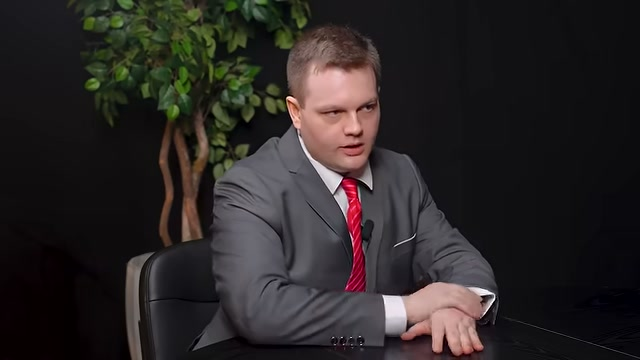
⏱ ~4:40
INTERVIEW
Explaining auction market theory — buyers, sellers, positioning
Chris frames the market as an auction. Buyers/sellers build positions when "comfortable." The moment one side gets aggressive = forced participation begins. This is his core mental model.
Auction Market TheoryPositioningValue Area
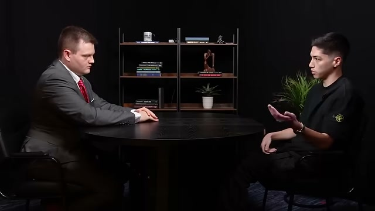
⏱ ~5:50
INTERVIEW
Trapped participants — the core edge concept
"When it fails, it creates trapped participants — they're offsides." This is the heart of the strategy: find where participants are forced to exit, creating cascade pressure. No need for home runs — 50-100 points is enough.
Trapped ParticipantsMean ReversionShort Squeeze
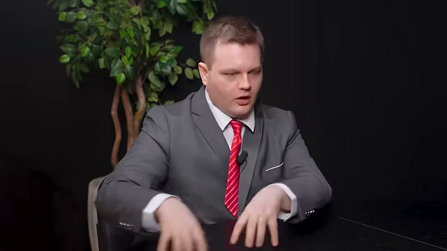
⏱ ~7:00
INTERVIEW
Host asks for whiteboard walkthrough — transition to strategy session
The host requests the step-by-step breakdown. This marks the pivot from conceptual discussion to the actual 4-step system drawn live on the whiteboard.
4-Step ProcessWhiteboard Setup
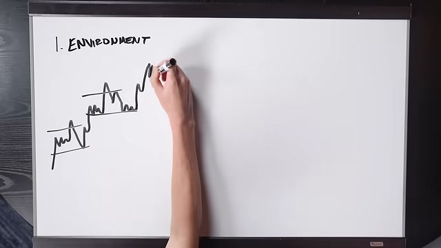
⏱ ~8:10
INTERVIEW
Chris explains the 4 steps: Environment, Location, Confirmation
First verbal reveal of the 4-step framework before drawing it. "Context, location, confirmation" — but he reframes the first step as "Environment" which is broader than context.
EnvironmentLocationConfirmation
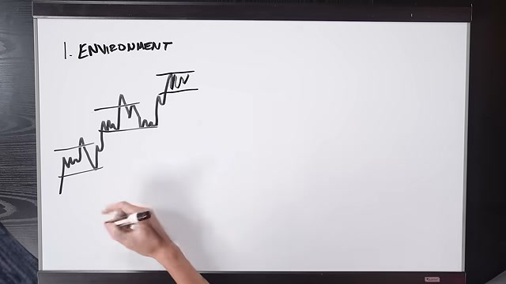
⏱ ~9:20
INTERVIEW
Moving to whiteboard area — strategy breakdown begins
Transition to the whiteboard session. Chris begins the most valuable part of the interview — drawing out every element of his system live for the first time on camera.
Live Strategy Session
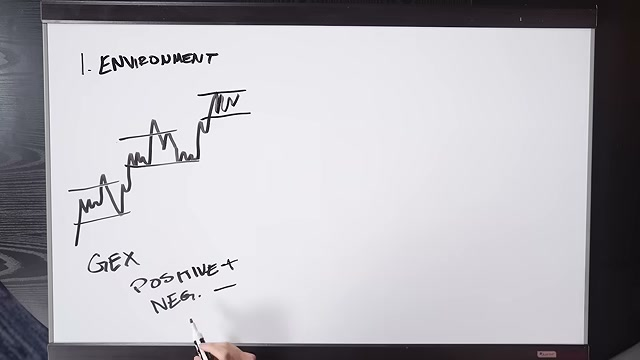
⏱ ~10:30
INTERVIEW
Chris at whiteboard — begins drawing market structure
First whiteboard drawings appear. Market structure basics: value being created higher, higher, higher. 1H/4H charts. Higher highs, higher lows = value up structure.
Market StructureHigher Time FrameValue Creation
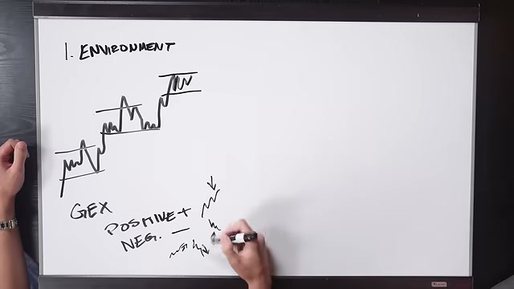
⏱ ~11:40
WHITEBOARD
Market structure drawing — value up, value creation zones
Whiteboard shows a price series creating value at progressively higher levels. The concept: market "builds value" at areas where buyers and sellers agree on price, then searches for new value.
Value AreaMarket StructureValue Up Structure
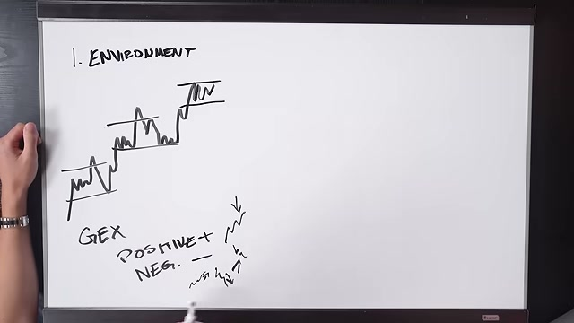
⏱ ~12:50
WHITEBOARD
GEX diagram introduced — positive vs. negative gamma zones
The second piece of Environment. Whiteboard shows a GEX profile with positive (green, dampening) and negative (red, amplifying) gamma zones. Chris explains why this matters: dealer hedging behavior creates predictable market dynamics.
GEXGamma ExposurePositive GammaNegative Gamma
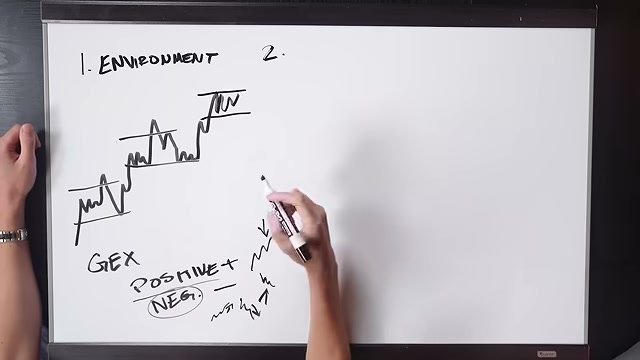
⏱ ~14:00
WHITEBOARD
Gamma profile showing call wall, put wall, and gamma flip zone
The whiteboard now shows three key GEX levels: Call Wall (overhead resistance where dealers sell), Put Wall (floor where dealers buy), and the Gamma Flip (where regime changes). These are plotted daily before the open.
Drawing shows how in positive gamma, every breakout attempt gets sold by dealers. The typical retail breakout strategy fails here repeatedly. This is why understanding GEX regime saves accounts.
Contrasting drawing: negative gamma dealers buy rips and sell dips → feedback loop → larger, faster directional moves. This is where Chris's order flow strategy has the most edge — fast momentum after confirmation.
Negative GammaVolatility AmplificationMomentum
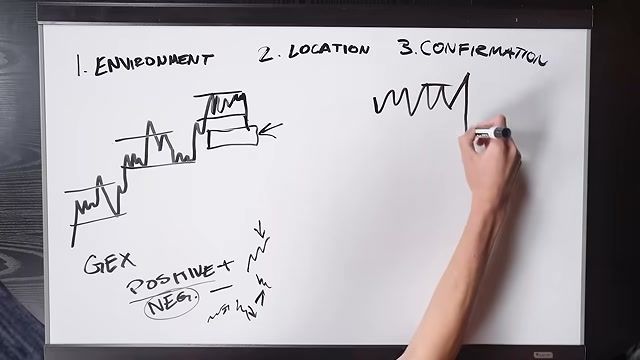
⏱ ~17:30
WHITEBOARD
Combined environment: value up + negative gamma = setup context
The two environmental layers combined on one drawing. Value Up structure on higher time frame + Negative Gamma regime = expect fast upside moves when triggered. This pre-defines the trade bias before the market opens.
EnvironmentBiasPre-Market Preparation
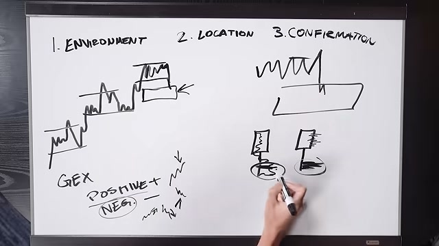
⏱ ~18:40
WHITEBOARD
Step 2: Location — value area, discount zone highlighted
Now drawing Location. The whiteboard shows value area box with "Discount" zone below it. In a value-up trend: the goal is to BUY in discount, not sell in premium. "An expensive place to want to get involved."
LocationDiscountPremiumValue Area
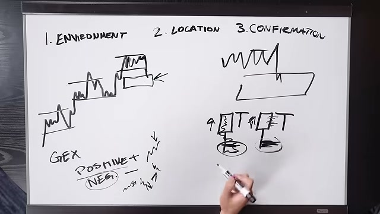
⏱ ~19:50
WHITEBOARD
Asia/London session range drawn — showing inefficient low-volume move
Whiteboard shows Asia session pushing price up quickly (thin, low volume = inefficient). The resulting gap down to value area at NY open creates the prime setup location — a low volume node that price must revisit.
Asia SessionLondon SessionLow Volume NodeInefficient Move
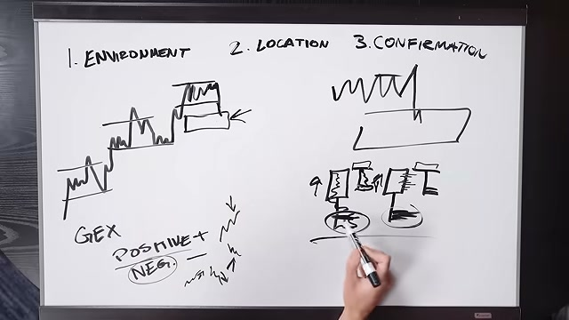
⏱ ~21:00
WHITEBOARD
NY Open drop into discount — "Here is Location"
The completed location drawing: NY open prices drop, breaks value area low, enters discount. This is the "HERE" moment — price is where Chris wants to do business. Now confirmation is needed.
NY OpenValue Area Low (VAL)Discount Zone
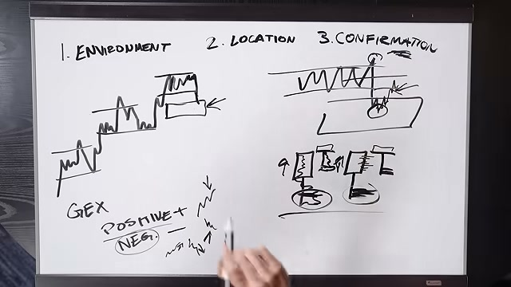
⏱ ~22:10
WHITEBOARD
Zoomed-in view — 5-minute candle order flow introduced
Transition from macro (structure + GEX + location) to micro (5-minute candles). The zoom-in shows individual candles entering the discount zone. Now Chris explains what he's watching inside those candles.
5-Minute CandlesOrder FlowZoom In
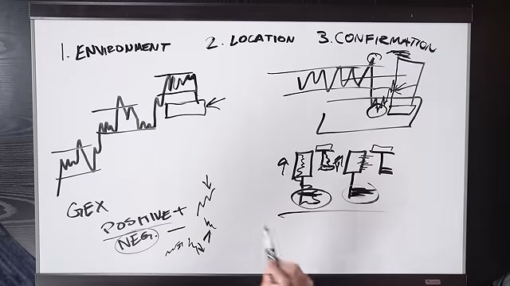
⏱ ~23:20
WHITEBOARD
Order flow candle with volume profile overlay drawn
First detailed candle drawing. Shows a 5-minute candle with a volume profile embedded inside it. POC (Point of Control) marked at the bottom = most contracts traded near the low = sellers in control so far.
Volume ProfilePOCPoint of ControlOrder Flow Candle
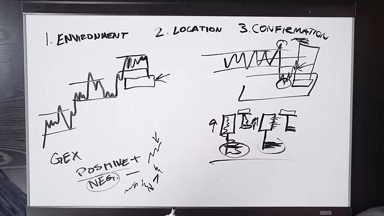
⏱ ~24:30
WHITEBOARD
Delta profile candle — negative delta shown at the low
Second candle type: delta profile. Shows aggressive sellers (negative delta) concentrated at the bottom of the candle. The large wick down with negative delta at low = sellers attacking but NOT progressing — they're getting absorbed.
DeltaNegative DeltaSellersAbsorption
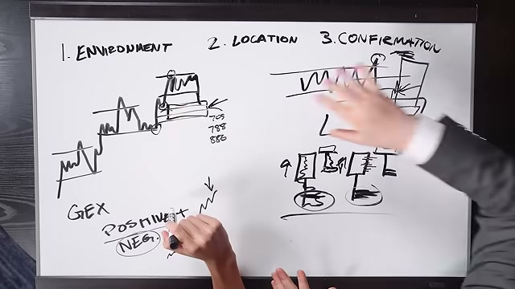
⏱ ~25:40
WHITEBOARD
Bullish candle close after seller absorption — shift of dominance setup
Critical moment: candle closes bullish despite negative delta at its low. This is the "effort vs result" principle — sellers put in max effort, got NO result. The close bullish signals dominance is shifting.
Bullish CloseEffort vs ResultDominance Shift
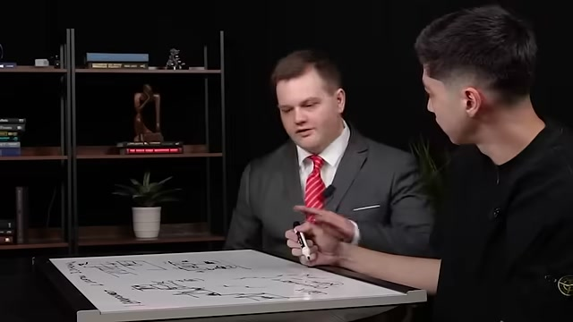
⏱ ~26:50
WHITEBOARD
Second candle test — sellers fail higher, confirmation complete
The confirmation sequence: next candle opens up, pulls back immediately, sellers try again — but fail at a HIGHER level than before. "Failure of sellers here." This double-failure confirmation is the trigger to go long.
Second TestFailure PatternLong Entry Signal
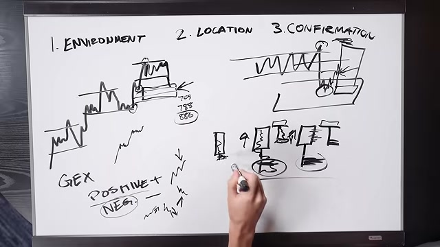
⏱ ~28:00
WHITEBOARD
Entry marked — "I'm going long" moment on the whiteboard
The whiteboard shows the complete pattern: discount location, seller absorption (negative delta, POC at low, bullish close), second test fails higher, positive delta builds. Entry arrow drawn. Stop below structure.
EntryStop Loss PlacementLong Setup Complete
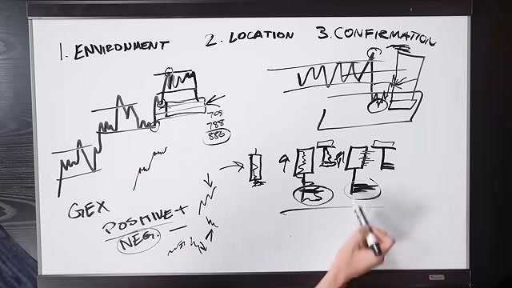
⏱ ~29:10
WHITEBOARD
Bid × Ask ladder imbalance system — 400% threshold marked
The bid × ask ladder diagram. Each price level shows aggressive buyers (ask side) vs aggressive sellers (bid side). When bold numbers appear (400%+ imbalance on buy side), aggressive buyers are overwhelming sellers. This fires the entry signal.
Target selection — swing points and trailing stop methodology
Target drawing: primary targets are previous swing highs (market must take swing points or it flatlines). Secondary: POC or call wall. Trailing stop activated as price enters resistance zones. Result: 1.5–2R.
TargetsSwing PointsTrailing StopRisk Reward
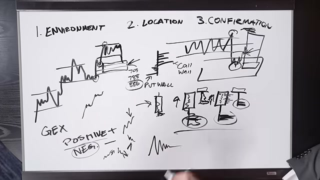
⏱ ~31:30
WHITEBOARD
Complete trade on whiteboard from location to exit
Full annotated trade shown: discount zone → seller absorption → dominance shift → entry → trailing stop → target at swing high. This is the complete "textbook" version of Chris's setup, end to end.
Complete TradeFull ProcessEnd to End
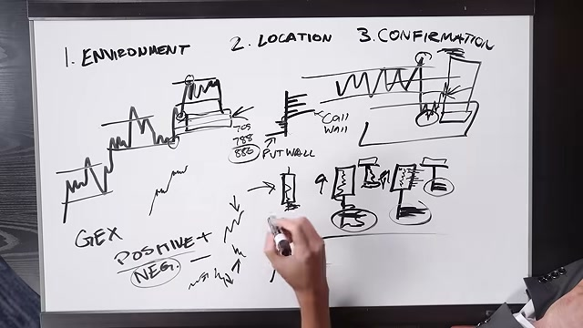
⏱ ~32:40
WHITEBOARD
Prop firm math drawn — drawdown vs. profit target = 1.5R
The whiteboard shows the prop firm risk model: $2K drawdown, $3K profit target = literal 1.5R. At 65% win rate with this R multiple = consistent funded payouts. Simple math that demystifies prop trading success.
Filter criteria drawn: the 20,000 contract per 5-minute MNQ threshold. Below this = participation dying = no trade. This is what limits Chris to the first 90 minutes of NY open where volume is highest.
Edge cases on whiteboard — when the system breaks down
Chris annotates situations where the setup fails: no confirmation despite location, balanced market, low volume, news event at the level. The 886 mention — specific structure levels that invalidate the setup.
Edge CasesSetup InvalidationRisk Avoidance
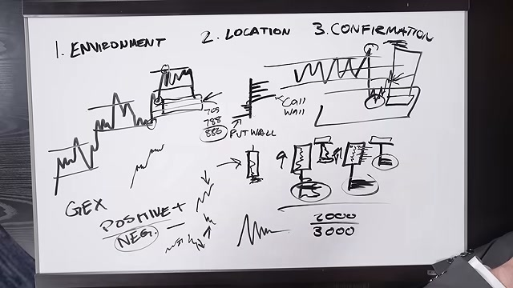
⏱ ~36:10
WHITEBOARD
Summary box on whiteboard — all 4 steps annotated together
Final whiteboard view with the complete framework annotated: Environment (structure + GEX), Location (discount/premium), Confirmation (order flow absorption + delta), Entry/Exit (imbalance trigger, swing targets, trail). The complete system on one board.
Complete Framework4 StepsSystem Overview
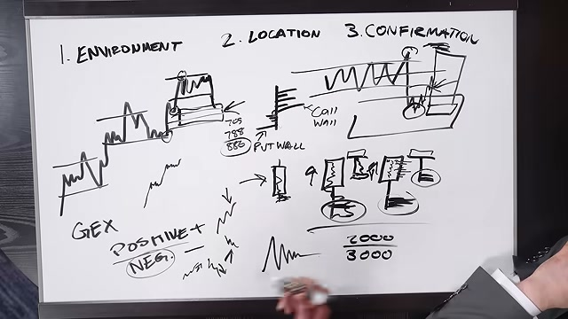
⏱ ~37:20
INTERVIEW
Post-whiteboard Q&A begins — win rate and profit factor discussion
Back to interview after whiteboard. Host confirms the numbers: 60-65% win rate, ~1.8 profit factor. Chris explains why 1.5R is "more than enough" for prop firms — the math doesn't require perfection.
Win RateProfit FactorProp Firms
⏱ ~38:30
INTERVIEW
Chris explains why chasing 10R is counterproductive for most traders
"The guys posting their tiny stop screenshots — I don't care about looking cool, I want to be right." Explains how high-R strategies require losing a lot of trades, which psychologically breaks beginners who then abandon good setups.
Risk RewardPsychologyHigh R Drawbacks
⏱ ~39:40
TWO PERSON
Both interviewer and Chris discussing how to practice the system
Host asks: how to deliberately practice this strategy? Chris recommends: learn auction market theory, download order flow platform (ATAS/DeepCharts), use replay mode. The key is reps with intentional execution — not random live trading.
PracticeReplay ModeATASDeep Charts
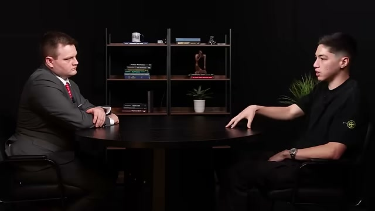
⏱ ~40:50
TWO PERSON
A/B/C game session framework explained at the table
Pivotal concept introduced: A, B, C game sessions are defined by EXECUTION quality, NOT P&L. An A-game losing day > C-game winning day. "Consistency comes from eliminating the C-game, not from more A-game sessions."
A-GameB-GameC-GameBack-End Optimization
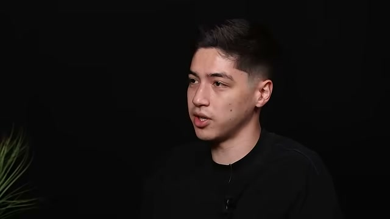
⏱ ~42:00
INTERVIEW
Good loss vs. bad loss explained by Chris
The distinction that changes everything: A good loss = valid setup, proper execution, market said no. A bad loss = you guessed, didn't wait for confirmation, bent rules. The second one — even if it sometimes wins — destroys long-term edge.
Good LossBad LossRule Following
⏱ ~43:10
INTERVIEW
The tilt spiral — bad loss → frustration → rule-bending → account blown
Chris maps the exact tilt sequence: bad loss → frustration → "I need to make it back" → rules bent → FOMO trade → bigger loss → spiral → account gone. This is the prop firm "boom and bust" loop that traps most traders.
TiltFOMOEmotional TradingBoom Bust Loop
⏱ ~44:20
INTERVIEW
Rules must have specific actions attached — "Don't overtrade" is NOT a rule
"Don't overtrade is not a rule. Rules require an action." A real rule: "Stop after 2 consecutive losses." Specific, measurable, executable. Chris explains how he discovered his own breaking points through data collection on his own trades.
Chris identifies his personal breaking points through trade data
By analyzing his own trade log, Chris noticed: after 90 minutes his trades "get dramatically worse." After 2 losses in a row, 50/50 chance he starts making bad decisions. These data-driven insights became his hard rules.
Trade LogData Analysis90-Minute Cutoff2-Loss Rule
⏱ ~46:40
INTERVIEW
Overconfidence as a trigger — winning too much also causes bad decisions
Surprising insight: breaking points aren't just from losses. Some traders tilt from winning streaks — overconfidence leads to sizing up recklessly or abandoning the confirmation process. "They're making emotional decisions from winning."
Chris's motivation: waking at 4:30 AM losing every day — "I never want to go back"
Personal psychology revealed: Chris's motivation isn't ambition — it's aversion. He remembers the dark period of waking at 4:30 AM, losing money, feeling embarrassed, not telling people how bad it was. That memory stops him from clicking up size when frustrated.
PsychologyMotivationLoss AversionIdentity
⏱ ~49:00
INTERVIEW
The turning point story — debt, depleted savings, "figure it out or lose everything"
Chris's full rock-bottom story. Quit his job, traveled, lost everything to trading, went into debt, pulled from crypto in a bear market. Hit a point of feeling "like a loser" but was too far in to quit. Made the decision to change perspective completely.
Turning PointRock BottomMindset Shift
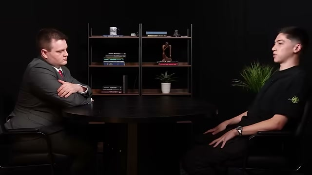
⏱ ~50:10
INTERVIEW
Removing money from the equation — sized down to one micro on prop firms
"I sized down to one micro on a prop firm. Not passing accounts. Not getting payouts. Just getting reps." The insight: when the dollar amount is negligible, you focus on HOW you trade instead of how much you're making/losing.
Sizing DownProcess FocusExecutionProp Firms
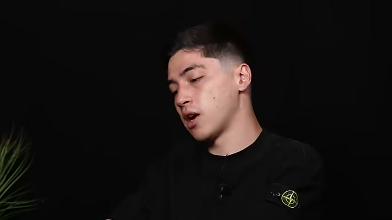
⏱ ~51:20
INTERVIEW
Money as byproduct — the execution focus realization
"When you focus on proper execution, money becomes the byproduct." Chris explains this isn't about pretending money doesn't exist — it's about where your primary focus is. He cares more about HOW he traded than what the P&L says.
Execution FocusMoney as ByproductProcess over Outcome
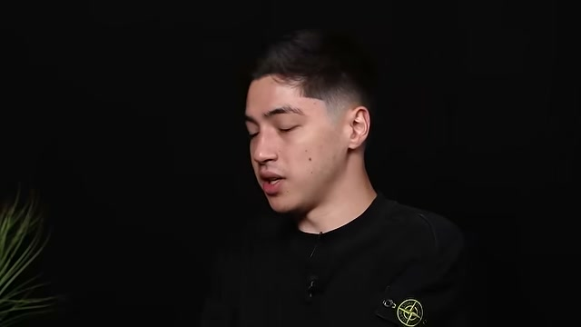
⏱ ~52:30
INTERVIEW
Advice: if struggling, start over — size down to insulting levels
"Size all the way down to the point where it's almost insulting." This forces execution focus. No screenshots for Instagram. No ego. Just reps. This is how you build the right habits that lead to eventual profitability.
Beginner AdviceHabit BuildingReps
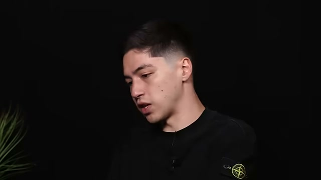
⏱ ~53:40
INTERVIEW
Be honest — some people are not suited for trading
Blunt honesty: "Some people are just not going to be good at trading. The way they behave is not going to complement trading." This matters because it saves people from years of pain. Not everyone needs to trade — and that's okay.
Self-AssessmentPersonality FitHonest Advice
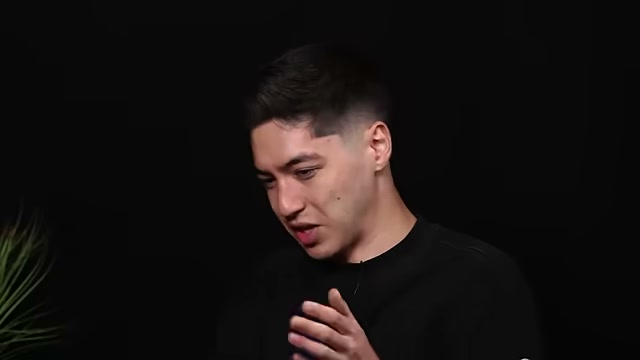
⏱ ~54:50
INTERVIEW
Stop watching social media wins — you are not the only person losing
"Stop looking at people winning on the internet and think you're the only one losing." Social media distorts trading reality. The cure: stop consuming comparison content and focus internally on your own execution journal.
Social MediaComparison TrapInternal Focus
⏱ ~56:00
INTERVIEW
Find the strategy that fits YOUR personality — don't hop around
Final strategic advice: some people can handle 10 setups/day, others can't. Find the one that fits your psychological makeup. Then execute ONLY that one until you have sufficient data. Strategy hopping is how you learn nothing about anything.
Strategy SelectionPersonality MatchFocus
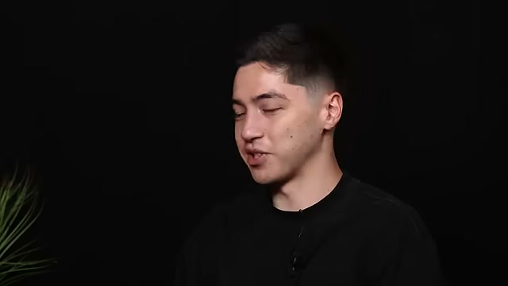
⏱ ~57:10
CLOSING
Closing — host thanks Chris, confirms 100% Robbins Cup win at 26
Final closing shot. Host acknowledges this as a remarkable achievement. Chris thanks IQ Capital for the first live in-person interview. "100% return, Robbins Cup Micro Day Trading, July, age 26. Really impressive, man." — a fitting close to a landmark interview.
ClosingIQ CapitalRobbins Cup100% Return
📄 Transcript
Full transcript available via YouTube captions (auto-generated English). The video is available with full captions on the YouTube page.